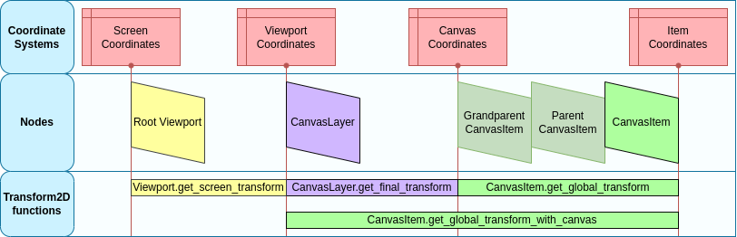

Transform của viewport và canvas
Giới thiệu
Đây là tổng quan về các transform 2D diễn ra với node từ lúc chúng vẽ nội dung cục bộ cho đến khi được vẽ lên màn hình. Phần tổng quan này đề cập đến các chi tiết rất cấp thấp của engine.
Mục tiêu của bài hướng dẫn này là chỉ cách đưa sự kiện input vào Input với vị trí nằm trong đúng hệ tọa độ.
Mô tả đầy đủ hơn về tất cả hệ tọa độ và transform 2D có tại Hệ tọa độ 2D và phép biến đổi 2D.
Canvas transform
Như đã đề cập trong bài hướng dẫn trước, Canvas layer, mọi node CanvasItem (hãy nhớ rằng các node dựa trên Node2D và Control dùng CanvasItem làm gốc chung) sẽ nằm trong một Canvas Layer. Mỗi canvas layer có một transform (tịnh tiến, xoay, scale, v.v.) có thể truy cập dưới dạng Transform2D.
Cũng như đã nói trong bài hướng dẫn trước, mặc định node được vẽ ở Layer 0, trong canvas tích hợp sẵn. Để đặt node vào một layer khác, có thể dùng node CanvasLayer.
Global canvas transform
Viewport cũng có một Global Canvas transform (cũng là một Transform2D). Đây là transform chủ, ảnh hưởng đến tất cả transform của từng Canvas Layer. Thông thường, nó chủ yếu được dùng trong CanvasItem Editor của Godot.
Stretch transform
Cuối cùng, viewport có một Stretch Transform, được dùng khi thay đổi kích thước hoặc kéo giãn màn hình. Transform này được dùng nội bộ (như mô tả trong Đa độ phân giải), nhưng cũng có thể đặt thủ công trên từng viewport.
Sự kiện input được nhân với transform này, nhưng không có các transform ở trên. Để chuyển tọa độ InputEvent sang tọa độ cục bộ của CanvasItem, hàm CanvasItem.make_input_local() đã được thêm vào cho tiện.
Biến đổi cửa sổ
Viewport gốc là một Window. Để scale và định vị nội dung của Window như mô tả trong Đa độ phân giải, mỗi Window chứa một window transform. Ví dụ, nó chịu trách nhiệm cho các dải đen ở hai bên Window để Viewport được hiển thị với tỷ lệ khung hình cố định.
Thứ tự transform
Để chuyển tọa độ cục bộ của CanvasItem sang tọa độ màn hình thực, phải áp dụng chuỗi transform sau:

Các hàm transform
Hình trên cho thấy một số hàm transform có sẵn. Tất cả transform đều có hướng từ phải sang trái, nghĩa là nhân một transform với một tọa độ sẽ cho ra hệ tọa độ nằm xa hơn về bên trái, còn nhân nghịch đảo affine của một transform sẽ cho ra hệ tọa độ nằm xa hơn về bên phải:
# Called from a CanvasItem.
canvas_pos = get_global_transform() * local_pos
local_pos = get_global_transform().affine_inverse() * canvas_pos
// Called from a CanvasItem.
canvasPos = GetGlobalTransform() * localPos;
localPos = GetGlobalTransform().AffineInverse() * canvasPos;
Cuối cùng, để chuyển tọa độ cục bộ của CanvasItem sang tọa độ màn hình, chỉ cần nhân theo thứ tự sau:
var screen_coord = get_viewport().get_screen_transform() * get_global_transform_with_canvas() * local_pos
var screenCoord = GetViewport().GetScreenTransform() * GetGlobalTransformWithCanvas() * localPos;
Tuy nhiên, hãy nhớ rằng thường không nên làm việc với tọa độ màn hình. Cách được khuyến nghị là chỉ làm việc trong tọa độ Canvas (CanvasItem.get_global_transform()), để tính năng tự động thay đổi kích thước theo độ phân giải màn hình hoạt động đúng.
Đưa vào sự kiện input tùy chỉnh
Thường bạn sẽ muốn đưa sự kiện input tùy chỉnh vào game. Với kiến thức ở trên, để làm đúng việc này trong cửa sổ đang được focus, cần thực hiện như sau:
var local_pos = Vector2(10, 20) # Local to Control/Node2D.
var ie = InputEventMouseButton.new()
ie.button_index = MOUSE_BUTTON_LEFT
ie.position = get_viewport().get_screen_transform() * get_global_transform_with_canvas() * local_pos
Input.parse_input_event(ie)
var localPos = new Vector2(10,20); // Local to Control/Node2D.
var ie = new InputEventMouseButton()
{
ButtonIndex = MouseButton.Left,
Position = GetViewport().GetScreenTransform() * GetGlobalTransformWithCanvas() * localPos,
};
Input.ParseInputEvent(ie);